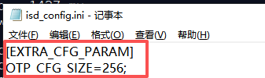
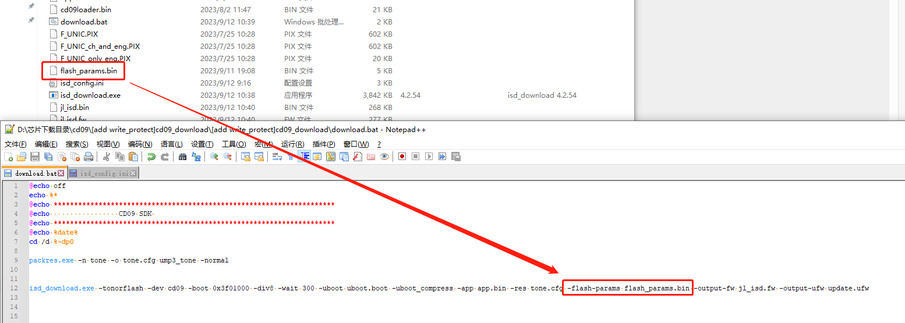

4.4. FLASH 参数配置说明
适用场景：sdk需要开启写保护功能，DTR功能，多算法授权功能。
需要增加OTP_CFG配置，即增加VOTP区，下载flash_params.bin 或 flash_params_v3.bin， 请按照以下说明更新SDK。
4.4.1. 支持OTP_CFG工具的最低版本
SDK需要支持OTP_CFG配置，相关工具需要更新到以下版本(或之后版本)。
工具 |
最低版本 |
说明 |
|---|---|---|
isd_download.exe |
4.2.54 |
|
一拖二烧录器 |
2.27.7 |
|
一拖八烧录器 |
3.1.22 |
4.4.2. VOTP，OTP 区域说明
VOTP：属于flash空间的某个区域，存储写保护参数，DTR参数和操作OTP的参数：cmd, addr，size等，支持烧写器和强制升级工具烧写
OTP： 跟flash空间分开，存储多算法授权数据，只支持烧写器烧写，lock otp 功能暂不支持
在sdk里调用 syscfg_read_otp 或 sys_cfg_read_otp 函数，会先找到VOTP存储的cmd, addr ,size参数，再用这些参数来访问OTP存储的多算法授权数据
4.4.3. SDK修改点
4.4.3.1. isd_config.ini文件
在isd_config.ini的
EXTRA_CFG_PARAM配置段中增加OTP_CFG_SIZE配置Note
[EXTRA_CFG_PARAM]
OTP_CFG_SIZE=256;如下图:

如需同时启用FLASH写保护功能，需要在isd_config.ini中增加以下配置
Note
[BURNER_PASSTHROUGH_CFG]
FLASH_WRITE_PROTECT=YES;如下图:

启用FLASH写保护功能，使用支持写保护功能的烧录器烧录时，会将芯片FLASH对应的写保护参数烧录到OTP_CFG区域中
如果是使用flash_params_v3.bin 参数，还需要在isd_config.ini中增加以下配置
需要根据flash spec来确认是否支持DTR和WPS功能
Note
[EXTRA_CFG_PARAM] NORFLASH_DTR_EN = 0;#给0是不使能DTR，给1是使能
NORFLASH_WPS_EN = 0;#给0是不使能WPS，给1是使能
4.4.3.2. download.bat文件
Important
启用OTP_CFG(VOTP)后，jl_isd.bin文件格式将升级为新格式。
fw_add.exe/ufw_maker.exe是无法识别的。
如果download.bat是通过fw_add.exe/ufw_maker.exe生成最终的FW/UFW文件，
那么需要删除download.bat中的fw_add.exe/ufw_maker.exe相关语句。
删除fw_add.exe/ufw_maker.exe相关语句后，
在isd_download.exe后增加-output-fw和-output-ufw参数，生成最终的FW/UFW文件。
如下图：

4.4.3.3. 开启使用写保护功能，DTR功能，多算法授权功能
如果需要在开发调试阶段使用开使用写保护功能，DTR功能，多算法授权功能，
可以通过isd_download.exe参数-flash-params指定FLASH写保护参数配置文件。
如下图:

注：flash_params.bin 适用的芯片：br27、br28 、br29、br50 、br52、 br56、bd47、bd49、bd45、br42、br46、CD09、br60、br62flash_params_v3.bin 适用的芯片：br35、sh58、sh59、mc03 及后续新的芯片
FLASH VOTP参数更新，支持以下2种方式：
1、FLASH VOTP参数数据，从以下链接可以获取：
20260828_flash_params.bin (点击此处下载_2026_08_28)
20260828_flash_params_v3.bin(点击此处下载_2026_08_28)2、在isd_config.ini的
EXTRA_CFG_PARAM配置段中增加以下配置，支持从服务器自动更新参数Note
[EXTRA_CFG_PARAM]
REMOTE_FLASH_PARAMS=YES;
设置FLASH VOTP参数配置文件，连接样机后，
执行download.bat批处理后，则会将开发板/样机中FLASH对应的写保护，DTR，多算法授权的参数下载到VOTP区域，并且有相关打印信息输出，如下图：